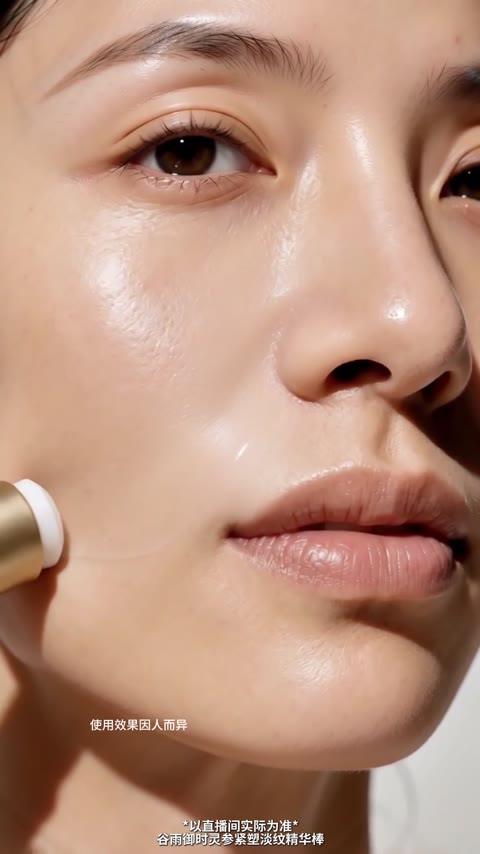
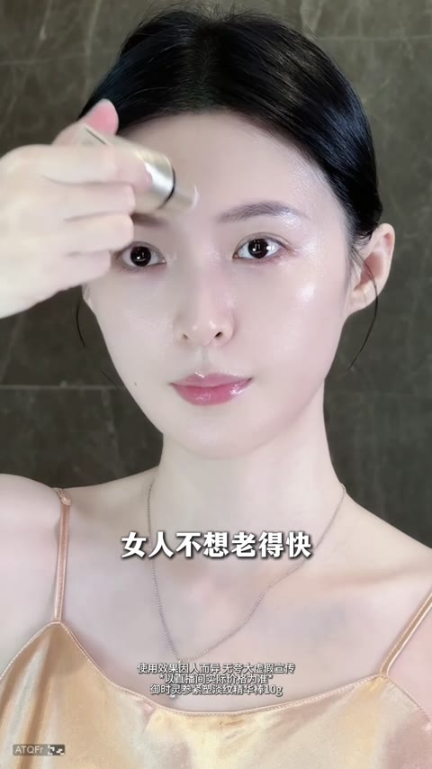
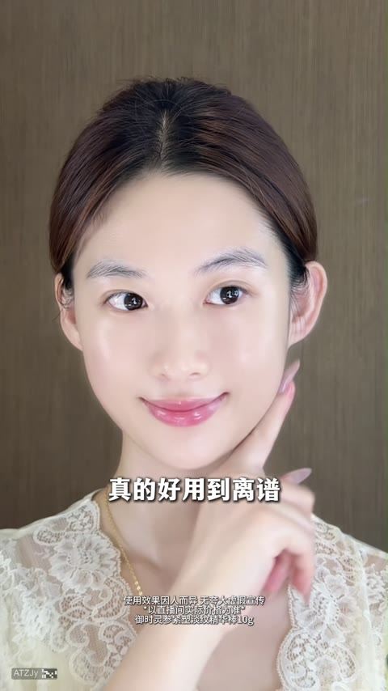
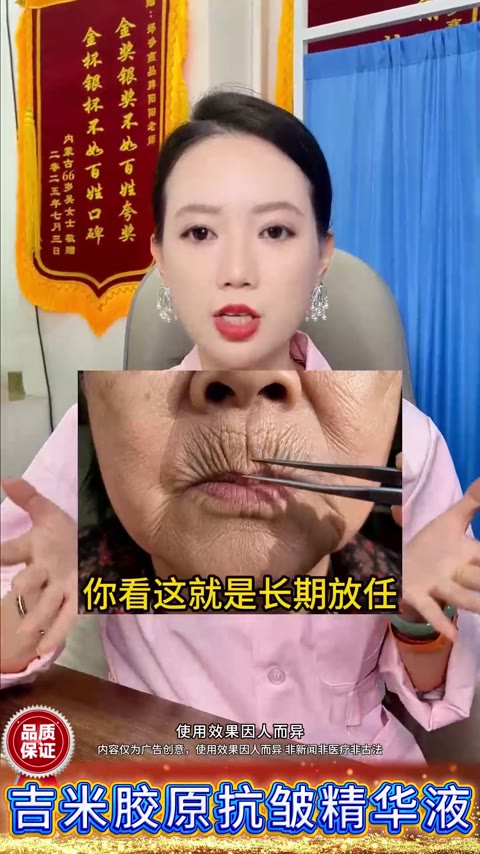
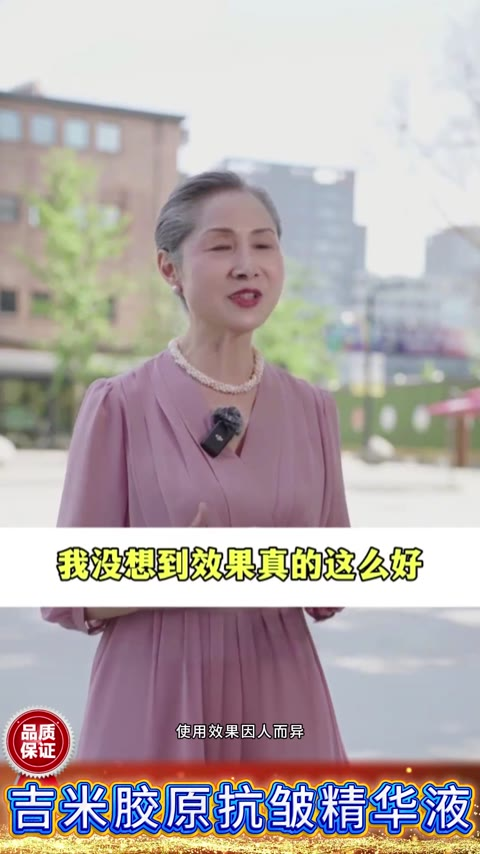

📊 指标均值 · 清晰呈现本类素材基准指标，帮你快速定位差距，校准优化方向
消耗(均值)
—增长量(均值)
—CTR (均值)
3.71%CVR (均值)
10.22%3s完播 (均值)
63.4%播放时长(均值)
21.5s📚 方法论沉淀 · 拆解开篇类型核心打法，吃透爆款底层逻辑，轻松拿捏创作节奏
🎬开篇方式细分· 还原头部素材的爆款开篇套路，直接参考高起量创作范式（推荐指数=消耗量级）
明星背书类⭐⭐⭐⭐⭐
通过秦岚、胡兵、李小冉、黄子韬等明星直播切片或路透场景开篇，借助明星光环快速建立信任感，高消耗素材中超70%采用此类型，消耗量级最高达18.2万，尤其适合30+抗衰人群心智建设
痛点开篇类⭐⭐⭐⭐
以法令纹、婆婆纹、眼袋泪沟等皱纹特写或产品起泡视觉奇观开场，用强视觉冲击直击用户抗衰焦虑，消耗量级可达12.7万，制造情绪共鸣后引出产品解决方案
达人种草类⭐⭐⭐⭐
以51岁冻龄博主、护肤达人等真实人设口播切入，通过年龄与外貌的强反差制造悬念，分享个人护肤经验引出产品，消耗量级可达6.8万，真实感强易引发共鸣
剧情演绎类⭐⭐⭐
以家庭冲突、情侣对话等剧情场景开篇，通过第三者嘲讽脸垮、情侣争吵等戏剧冲突制造悬念，消耗量级达17.6万，完成剧情反转后自然引出产品，娱乐性强完播率高
营销福利类⭐⭐⭐
直接以全场一折、拍2发4、买一送一等超强福利钩子开场，配合周年庆、双节大促等节点营造紧迫感，消耗量级可达3.5万，适合大促节点快速起量
产品展示类⭐⭐
以产品瓶身特写、精华起泡、涂抹质地等产品本身视觉奇观开场，需配合痛点文案增强吸引力，消耗量级相对较低，适合有独特产品形态的精华类产品
📋脚本框架· 标准化脚本流程拆解，素材组合直接照着用，降低创作试错成本（6 段）
A
【开篇钩子】
⏱ 0-5s
3秒内抓住注意力，制造悬念或情绪共鸣
📌 【明星背书/痛点特写/剧情冲突/年龄反差/福利悬念】开篇，用视觉冲击或情感钩子阻断用户划走
B
【痛点激化】
⏱ 5-20s
精准戳中目标用户抗衰焦虑，建立需求认知
📌 【用户痛点】轰炸，如法令纹显老、断崖式衰老、胶原蛋白流失、脸垮松弛等，配合皱纹特写强化焦虑
C
【产品亮相+成分背书】
⏱ 20-45s
引出产品并建立专业信任
📌 【产品成分卖点】+【功效成分背书】，展示人参皂苷CK、胶原肽、山参精华等核心成分，强调自研技术或明星同款
D
【效果证言+使用演示】
⏱ 45-70s
用真实案例和可视化效果增强说服力
📌 【效果对比】+达人/素人证言，展示淡纹紧致、水光感等使用效果，配合上脸演示教学降低使用门槛
E
【卖点轰炸】
⏱ 70-90s
强化产品差异化优势和多效价值
📌 多效合一、固态便携、一支顶四、30秒搞定等【产品成分卖点】密集输出，建立超值认知
F
【促销转化】
⏱ 90s-结尾
制造紧迫感促成即时下单
📌 【价格福利】收尾，拍2发4、全场一折、买正装送正装等促销机制+限时倒计时，引导直播间下单
☁️核心词云· 提炼高频重点标签，靠前标签即高机会，快速抓准流量密码（卖点 / 用户痛点）
✨ 卖点 · 20 词
抗皱紧致淡化细纹胶原蛋白人参皂苷CK山参精华多效合一固态便携提拉紧致水光感淡斑美白一支顶四快速吸收贵妇SPA体验涂抹式焕肤明星同款胶原肽矩阵紧致提拉淡纹抗皱固态精华美白淡斑
😣 用户痛点 · 20 词
法令纹婆婆纹川字纹眼袋泪沟松弛下垂断崖式衰老脸垮暗沉抬头纹鱼尾纹眉间纹颈纹胶原流失皮肤粗糙卡粉卡纹没气色显老浮肿松垮面部松弛皱纹细纹暗沉蜡黄眼尾纹
🪞模特 / 对比 / 场景 三段画像
👤 模特画像
以35-55岁气质女性为主，偏好选择有明显抗衰需求但保养得当的素人或明星，展示冻龄状态与年龄形成反差，增强产品说服力
🔁 效果对比方式
通过皱纹特写vs紧致状态、使用前松垮vs使用后提拉、半脸对比等方式呈现效果，配合放大镜找纹、年龄反差字幕等视觉强化
🎬 场景搭建
以日常护肤场景为主（浴室、化妆台、卧室），辅以明星路透、直播间切片、街头采访、实验室等多元场景增强真实感与权威性
💬常见爆款话术· 整理高转化爆款话术，直接复用提升素材起量率与吸引力（≥2 条素材出现，产品名已隐藏）
🚀跑量关键点· 跑量必备要素清单，逐项 check，确保创作不踩坑
- **痛点可视化冲击**：皱纹特写+提拉对比开场，3秒直击30+女性抗衰焦虑
- **明星矩阵背书**：冻龄明星轮番种草+职业故事共情，建立社交货币感
- **促销紧迫闭环**：拍2发4+全场一折+限时倒计时，制造下单紧迫感
📈高光时序数据· 近 7 天日均真实播放进度数据
61/68 条素材有高光时序（覆盖率 89.7%）；关键转化点主要集中在 15-30s。点击/点赞/转发/流失关键点分别为 143/48/38/86 个。
内容策略与转化表现
内容承接
正向 82 · 流失 36 · 平均 15.1s
点击 45 / 点赞 23 / 转发 14 / 流失 36
点击 45 / 点赞 23 / 转发 14 / 流失 36
“(妻子华丽变身出场) 爸爸：『哇！』”
痛点问题
正向 41 · 流失 14 · 平均 22.1s
点击 29 / 点赞 6 / 转发 6 / 流失 14
点击 29 / 点赞 6 / 转发 6 / 流失 14
“达人：『早告诉你们了，皮秒可以在家里做啦。我全网邀请你们法令纹深的来试试』”
价格促销
正向 38 · 流失 8 · 平均 24.8s
点击 27 / 点赞 7 / 转发 4 / 流失 8
点击 27 / 点赞 7 / 转发 4 / 流失 8
“达人：『谁能拒绝一年一次的一折闪充胶原棒呢？你就买一支回去试试，不用调不用配，洗完脸直接涂』”
实测演示
正向 36 · 流失 11 · 平均 23.7s
点击 22 / 点赞 5 / 转发 9 / 流失 11
点击 22 / 点赞 5 / 转发 9 / 流失 11
“达人：『谁能拒绝一年一次的一折闪充胶原棒呢？你就买一支回去试试，不用调不用配，洗完脸直接涂』”
行动催单
正向 28 · 流失 12 · 平均 23.0s
点击 20 / 点赞 4 / 转发 4 / 流失 12
点击 20 / 点赞 4 / 转发 4 / 流失 12
“女性旁白：『水乳留给十几岁的小姑娘用，现在还在用水乳，你是怕自己脸垮的太慢了。你要是皮肤干的、黄的、垮的，你就好好用这个谷雨的胶原精华棒去护肤』(画面：秦岚涂抹+苹果肌展示) 字幕：谷雨品牌代言人秦岚”
口碑证明
正向 25 · 流失 9 · 平均 23.9s
点击 17 / 点赞 3 / 转发 5 / 流失 9
点击 17 / 点赞 3 / 转发 5 / 流失 9
“达人：『为了参加儿子家长会，用了一星期的谷雨山参胶原棒，同学妈妈都以为我才20出头』”
- 内容可解释率 100.0%：315/315 个关键点匹配到对应脚本或结构文案。
- 正向转化最强的是「内容承接」：出现 82 个点击/点赞/转发关键点，平均发生在 15.1s；典型内容“(妻子华丽变身出场) 爸爸：『哇！』”。
- 主要流失风险来自「内容承接」：对应 36 个流失关键点，平均发生在 12.0s；需优先压缩或改写“肖涵：『我的身体我不会让它吃太多的加工产品』”。
关键点内容证据
abc3b52e · 8.0s · 流失最大流失点（142.6）用户在此大量划走
90c334e4 · 16.0s · 流失最大流失点（142.3）用户在此大量划走
54140384 · 18.0s · 流失最大流失点（142.1）用户在此大量划走
5bdf549e · 31.0s · 流失最大流失点（141.7）用户在此大量划走
a7438eec · 5.0s · 流失最大流失点（141.1）用户在此大量划走
a472f304 · 55.0s · 流失最大流失点（140.6）用户在此大量划走
b8552711 · 4.0s · 流失最大流失点（137.7）用户在此大量划走
bb08b897 · 20.0s · 流失最大流失点（137.7）用户在此大量划走
🏆 代表素材关键帧拆解 · 品牌 / 非品牌各 Top5（按消耗降序）
🏪 品牌素材 Top5（按消耗降序）

#1
消耗 — · 增长量 — · CTR 4.15% · CVR 12.33% · 3s完播 65.0% · 播放时长 34.1s
🎂 转化人群年龄分布 主力 50+
40- 7.4%40-50 32.4%50+ 60.2%
19-24 0.2%25-29 0.3%30-34 1.2%35-39 5.7%40-44 13.5%45-49 18.9%50-54 23.2%55-59 18.9%60-64 11.4%65+ 6.7%
开篇类型属于家庭冲突剧情反转+明星达人背书型。开篇以小女孩怒斥副驾女子的家庭冲突剧情制造悬念，第三者嘲讽妻子『脸都垮了』点明抗衰痛点。妻子回家准备逆袭，引出某品牌固态胶原棒产品。接着切入多位达人实测混剪，展示法令纹、抬头纹等细纹淡化效果，配合秦岚、肖涵等明星同款背书建立信任。重点强调『口红旋转黑科技』『一支顶水乳面霜精华』等差异化卖点。结尾妻子华丽变身惊艳全场，呼应开篇剧情完成反转，引导进入直播间购买。

剧情冲突开篇
0-10s

痛点激化
10-47s

产品亮相
48-60s

达人种草
60-140s

卖点轰炸
140-165s

#2
消耗 — · 增长量 — · CTR 2.62% · CVR 12.57% · 3s完播 41.6% · 播放时长 10.6s
🎂 转化人群年龄分布 主力 50+
40- 5.4%40-50 32.4%50+ 62.2%
0-13 0.1%19-24 0.2%25-29 0.2%30-34 0.8%35-39 3.9%40-44 12.5%45-49 19.9%50-54 23.1%55-59 18.5%60-64 12.3%65+ 8.3%
开篇类型属于痛点对比+明星背书型。开篇直接展示面部松弛女性，用手托提拉制造即时对比，配合『你要是也这样就不要再拖了』引发焦虑共鸣。接着通过雕像涂抹去皱的夸张视觉奇观强化产品功效印象。随后切入明星秦岚和演员肖涵的使用推荐，建立信任背书。重点展示产品针对眼尾纹、法令纹、木偶纹、颈纹的多部位使用方法，强调『居家SPA』替代美容院的性价比。通过成分动画解析人参皂苷CK、重组III型胶原等核心成分。结尾以『拍2发4』促销信息和紧迫感话术引导下单。

痛点引入
0-3s

视觉奇观
3-12s

明星背书
13-33s
多部位演示
34-55s

价值对比
56-62s

#3
消耗 — · 增长量 — · CTR 3.42% · CVR 10.76% · 3s完播 51.8% · 播放时长 10.1s
🎂 转化人群年龄分布 主力 50+
40- 8.7%40-50 41.6%50+ 49.6%
0-13 0.2%19-24 0.2%25-29 0.3%30-34 1.2%35-39 6.9%40-44 17.7%45-49 23.9%50-54 19.9%55-59 15.2%60-64 8.9%65+ 5.7%
开篇类型属于达人生活场景+多明星背书型。开篇以轻熟女性参加家长会为场景切入，展示使用产品后被误认为20出头的惊喜效果，制造好奇心。接着切入秦岚、肖涵、何泓姗三位明星的推荐切片，用『水乳留给小姑娘』『不流行用水乳了』等话术制造焦虑，强调产品针对干黄垮肌肤的功效，以及第二天皮肤饱满、细纹淡化的即时效果。重点展示产品使用便捷性：圆润笔管设计、不用调配、30秒搞定、早晚各一次。结尾以秦岚联合某品牌的宠粉福利收尾，拍二发四引导下单。

悬念开场
0-6s

明星背书
7-22s

明星种草
23-35s

福利喊话
36-43s

卖点轰炸
44-55s
#4
消耗 — · 增长量 — · CTR 2.48% · CVR 16.43% · 3s完播 66.3% · 播放时长 23.1s
🎂 转化人群年龄分布 主力 50+
40- 9.3%40-50 41.0%50+ 49.7%
25-29 0.4%30-34 1.4%35-39 7.5%40-44 17.0%45-49 24.0%50-54 21.7%55-59 15.0%60-64 8.2%65+ 4.8%
开篇类型属于达人人设口播+明星背书型。开篇以51岁女性分享健康生活习惯切入，通过年龄与外貌的强反差制造悬念吸引停留。接着引入胶原蛋白流失的衰老痛点，带出某品牌山参胶原棒产品。随后通过家长会被误认20出头的证言强化效果。重点展示秦岚、肖涵等明星推荐片段，强调皮肤饱满嫩滑、看不见细纹等使用效果。卖点轰炸环节详解产品便捷性（30秒搞定）、多效合一、圆润笔管设计等核心优势。结尾以一折优惠+拍二送四的福利机制引导进入直播间下单。
开篇悬念
0-7s

痛点引入
7-21s

用户证言
21-34s
明星背书
34-63s
促销氛围
63-71s

#5
消耗 — · 增长量 — · CTR 2.76% · CVR 11.98% · 3s完播 55.2% · 播放时长 10.6s
🎂 转化人群年龄分布 主力 50+
40- 9.1%40-50 41.0%50+ 49.9%
25-29 0.3%30-34 1.4%35-39 7.5%40-44 17.7%45-49 23.3%50-54 22.2%55-59 15.0%60-64 7.6%65+ 5.1%
开篇类型属于多明星采访切片+品牌代言人背书型。开篇以李小冉自爆『脸垮差点被换角』的戏剧性故事切入，配合吴昕救场推荐制造悬念。接着快速切换吴昕、姜妍的直播切片，展示明星私下互相推荐的真实场景，强化『半个娱乐圈都在用』的社交货币感。重点展示品牌代言人秦岚的深度体验分享，用『两只手托脸往上走』『化妆师惊呆了』等生动描述传递产品效果。随后何泓姗补充『哪里有纹路涂哪里』的使用方法，降低决策门槛。结尾强调『买正装送正装』的促销福利，配合秦岚空降直播间的号召引导下单。

明星痛点引入
0-5s

产品亮相
6-15s

多明星背书
16-27s

卖点速递
28-34s

代言人深度种草
35-56s
🏬 非品牌素材 Top5（按消耗降序）

#1
消耗 — · 增长量 — · CTR 3.12% · CVR 7.40% · 3s完播 61.9% · 播放时长 14.0s
🎂 转化人群年龄分布 主力 50+
40- 1.6%40-50 5.5%50+ 92.8%
30-34 0.5%35-39 1.1%40-44 1.9%45-49 3.6%50-54 6.2%55-59 11.3%60-64 19.6%65+ 55.7%
开篇类型属于达人人设口播+多用户证言型。开篇以医护人设达人用『告诉大家一个得罪人的秘密』制造悬念，点明长斑是黑色素堆积问题，引出媄颜淡斑油。接着通过达人口播强调产品效果猛、斑点怕它，建立产品力认知。中段切入阳姐与用户居家对话场景，传递正确用法（晚上抹白天不抹），同时展示60岁婆婆使用后的惊喜反应增强信任。随后抛出全场一折的促销信息制造紧迫感。后段阳姐详细讲解斑点成因和产品使用方法，配合街头采访素人证言『便宜又好用』『舍不得退』强化口碑。结尾以宠粉福利机制+工厂直发+限时恢复原价99元引导下单。

悬念开场
0-3s

痛点引入
3-9s

卖点轰炸
10-21s

用户证言
22-34s

促销信息
35-44s

#2
消耗 — · 增长量 — · CTR 10.98% · CVR 5.01% · 3s完播 64.3% · 播放时长 21.0s
🎂 转化人群年龄分布 主力 50+
40- 0.0%40-50 0.0%50+ 100.0%
50-54 3.7%55-59 9.1%60-64 18.7%65+ 68.5%
开篇类型属于达人口播+专家讲解型。开篇以70岁银发奶奶的自述制造悬念，用『没脸见人』的反差话术吸引停留，展示其红润平滑的皮肤状态。接着切换到专家阳阳的讲解，通过平板展示婆婆纹、括号纹等皱纹痛点，建立专业信任。随后多位用户出镜表达感谢，形成口碑背书。重点展示产品功效和使用建议，强调不用去机构花冤枉钱。穿插街头采访快速好评，营造热销氛围。最后通过全场一折、工厂直发、50年国货老品牌等促销信息和品牌背书，制造紧迫感引导下单。

悬念开篇
0-9s

痛点讲解
9-19s

产品亮相
19-21s

用户证言
21-29s

卖点轰炸
29-41s
#3
消耗 — · 增长量 — · CTR 3.62% · CVR 8.12% · 3s完播 61.6% · 播放时长 13.2s
🎂 转化人群年龄分布 主力 50+
40- 0.0%40-50 0.0%50+ 100.0%
50-54 8.5%55-59 15.8%60-64 23.7%65+ 52.0%
开篇类型属于痛点对比+达人口播型。开篇直接展示嘴角老太纹、婆婆纹的特写图片，用视觉冲击戳中用户皮肤衰老焦虑。接着主播阳阳穿医生服出镜，针对川字纹、婆婆纹等不同皱纹类型逐一点名，强调产品针对性。中段穿插三位老年女性的感谢证言，用『阳阳是我恩人』等情感化表达建立信任。随后展示产品使用方法，强调无需调配、全脸薄涂的便捷性。最后通过上海陈女士的深度案例分享增加可信度，结尾放出『拍一发四』的促销福利，明确适用年龄30-60岁，引导进入直播间下单。

痛点引入
0-7s
产品亮相
7-13s
卖点轰炸
13-22s

用户证言
22-30s
反向营销
30-38s

#4
消耗 — · 增长量 — · CTR 2.09% · CVR 2.78% · 3s完播 55.2% · 播放时长 9.4s
🎂 转化人群年龄分布 主力 40-50
40- 6.4%40-50 47.9%50+ 45.7%
25-29 0.3%30-34 1.1%35-39 5.1%40-44 19.3%45-49 28.6%50-54 22.3%55-59 13.1%60-64 6.4%65+ 3.9%
开篇类型属于专家人设口播+CEO背书型。开篇由穿白大褂的专家出镜，用『聪明人都不会去动大括号』的反向警告制造好奇，随后列举法令纹、抬头纹、川字纹、眼角纹等痛点，强调医美风险『整个人会僵』。接着自然引出产品『某品牌小鹿精华』作为替代方案。重点展示某品牌集团CEO尹烨的背书切片，强调链博会首发、鹿茸成分的生态级研究。通过旁白介绍东北纯血梅花鹿顶端2%蜡片、-40℃冻干锁鲜技术等核心卖点。展示14天/28天功效报告数据，以及达人使用反馈。结尾引导点击下方链接购买，强调『链接还在优惠就还在』。

痛点+悬念开场
0-5s

痛点强化
5-13s

产品亮相
13-17s

CEO背书
17-28s

卖点轰炸
28-43s

#5
消耗 — · 增长量 — · CTR 4.70% · CVR 12.00% · 3s完播 86.1% · 播放时长 49.9s
🎂 转化人群年龄分布 主力 50+
40- 0.0%40-50 0.0%50+ 100.0%
50-54 5.9%55-59 10.5%60-64 19.0%65+ 64.6%
开篇类型属于素人口播+反转悬念型。开篇以『70岁奶奶不敢见人』的悬念标题吸引停留，奶奶展示紧致皮肤状态形成年龄反差冲击。接着亮出产品，强调『不用调不用配，洗完脸直接用』的便捷卖点，并用『口红可以不买但这个必须买』制造urgency。随后切入阶梯式降价话术，从99元降到69元再到全场一折，配合多位素人街采证言『便宜好用、回购多次』建立信任。中段主播阳阳以人设口播针对眼袋泪沟松弛人群种草，强调良心产品。结尾展示工厂生产线和快递发货场景，突出工厂直发无中间商，以周年庆倒计时促成转化。

悬念开篇
0-3s

痛点引入
3-8s

产品亮相
8-15s

场景种草
15-22s

价格轰炸
22-32s